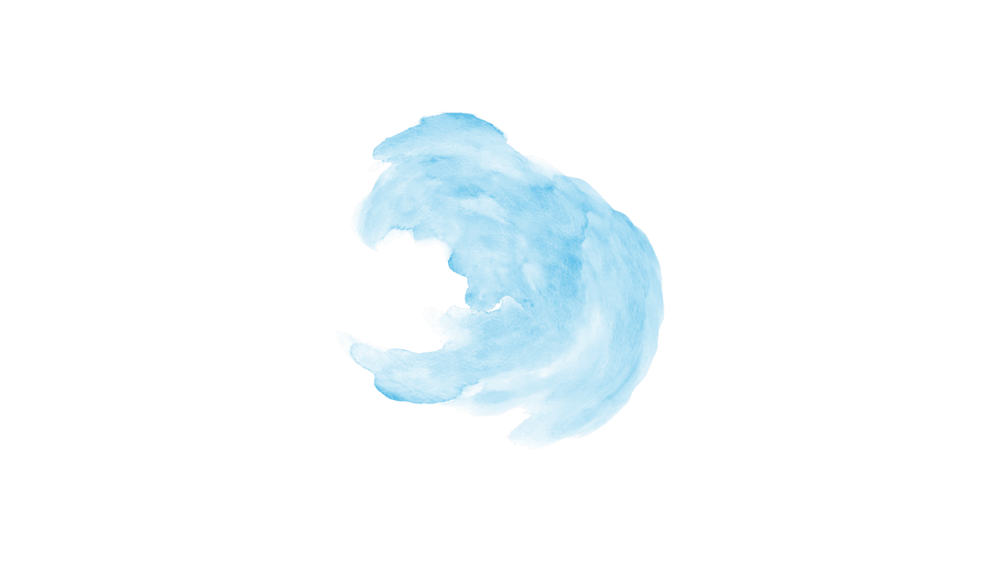

Conheça
Nossa
Miniempresa!



O produto é colocado em um frasco de spray de 100ml, prático e seguro de usar, com ótima vedação para melhor resultado para o seu tênis.

Borrife o líquido Swash na esponja seca e esfregue o calçado suavemente em movimentos circulares. Espere secar. Não há necessidade de enxágue.

Água, sabão neutro, bicarbonato de sódio, vinagre e álcool vegetal. Ingredientes não-tóxicos e seguros para uso doméstico.

Manter fora do alcance de crianças. Não ingerir. Evitar contato com olhos. Produto biodegradável.